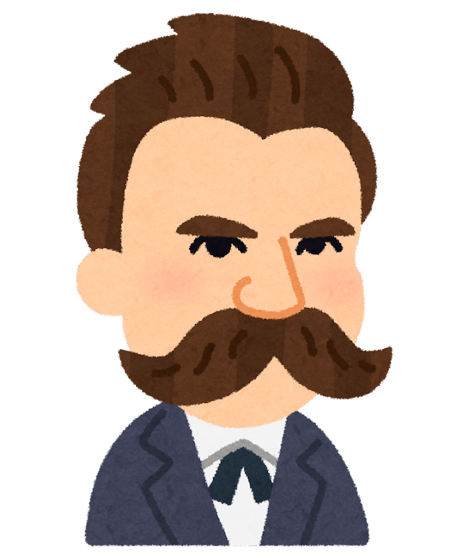

釈迦
釈迦は王族の家に生まれて何不自由ない生活を送っていたが、この世には様々な苦痛が満ちているということに気付き29歳で出家した。厳しい修行の末、世の中にある様々な苦しみはすべて「執着」がもとになって生まれると考え、それらは「八正道」を通して断つことができると教えた。（※「八正道」…①正見（正しく物事を観察する）、②正思（正しく思考する）、③正語（正しい言葉遣いをする）、④正業（正しい行いをする）、⑤正命（正しく生活規則を守る）、⑥正精進（正しい精進に励む）、⑦正念（正しく頭に物事を刻み込む）、⑧正定（正しい瞑想を行う））
孔子
孔子は儒教の始祖とされ、弟子たちによって孔子の教えがまとめられた『論語』はとても有名である。『論語』の中に、「子曰、譬如爲山、未成一簣、止吾止也、譬如平地、雖覆一簣、進吾往也」という言葉がある。これは「例えば山を作るようなものである。最後のもうひと盛というところでやめてしまったとしたらそれは誰でもない自分のせいである。例えば地面をならすようなものである。ほんの少しの土でも自分が盛ったのであればそれは自分の成果である」という意味である。私たちは自分で始めたことであってもそれが滞ると別の何かや誰かのせいにしてしまうことがある。しかし成果が出るも出ないもすべては自分次第で、他の何かのせいにしている限りそれ以上の成長を見込むことはできないと孔子は教えている。
荀子
荀子は儒教の立場から、人の生まれつきの性質は悪であるという「性悪説」を提唱した。もしも礼儀や法律を廃止して人々をなすがままに放置したら、強い者が弱い者を虐げ社会の秩序は崩壊してしてしまうと言い、そのような事態を避けるためには生まれもった醜い感情（利己、嫉妬、怠惰、憎悪など）を儒教の教えによって矯正する必要があると説いた。荀子の思想がまとめられた『荀子』の勧学篇にある「学は以て已むべからず」（人は生涯学ぶことをやめてはならない）という言葉からもわかる通り、人の本性を悪とすることで人が改心し成長する余地を見出した。
韓非子
韓非子は荀子の弟子であったため性悪説を受け継ぐ思想だったが、その目指すところは全く違った。荀子が醜い感情を持つ人間を礼によって正そうとしたのに対し、韓非子は生まれつきの性質が悪ということを受け入れて、それに合わせた統治を行うべきであると考えた。つまり韓非子は人間の本質は道徳より損得で動くということを見抜き、そのような性質を矯正するのではなく上手くコントロールする方が得策だと考えた。法律と賞罰によって支配することが政治の根本であるという法治主義の立場を取ることで社会の秩序を保とうとした。
ソクラテス
ソクラテスの考え方を端的に表したのが「無知の知」である。人はただ生きるのではなく「善く生きる」ということが大切だと言う。人が過ちを犯すのはそのことに対する知識がないからで、何が正しいことかを知っていれば人は必ず正しい選択をするはずだと主張した。悪いことだと分かっているのについやってしまうのは、それが悪いことだと本当の意味では理解していないからだと考えた。つまり行為自体が悪いことであっても、その結果自分に何かしらの利益があるということを見込んでおり真の意味でそれが悪いことだと理解していないのだとソクラテスは考えた。
アリストテレス
アリストテレスはこの世のあらゆる事物はその素材となる質量（ヒュレー）と不偏的な性質を表す設計図のような役割（エイドス）から成り立っていると考えた。さらに変化や作用を受ける前の状態を可能態、完成した状態を現実態と呼んだ。花を例に挙げると、種は質量（ヒュレー）で変化が起こる前なので可能態であり、設計図の役割を果たす形態（エイドス）に応じて花が咲き現実態となる。事物はあるものが何にでも変化するわけではなく、エイドスに応じて決まった形に変化すると説明した。
デカルト
デカルトは自分が知っていることに対して疑いの目を向け自分の感覚について考えた。その結果、自分が見たものや聞いたことは実際には存在せずそもそも自分の身体自体が本当は存在しないのではないかと考えた。しかしそのような考えに至ったのは紛れもなく思考する自分自身であり、自分自身が自分の精神を働かせたり、何らかの作用を受けている限り自分の精神は確実に存在することになる。そして、かの有名な「我思う、ゆえに我あり」という結論に至った。
